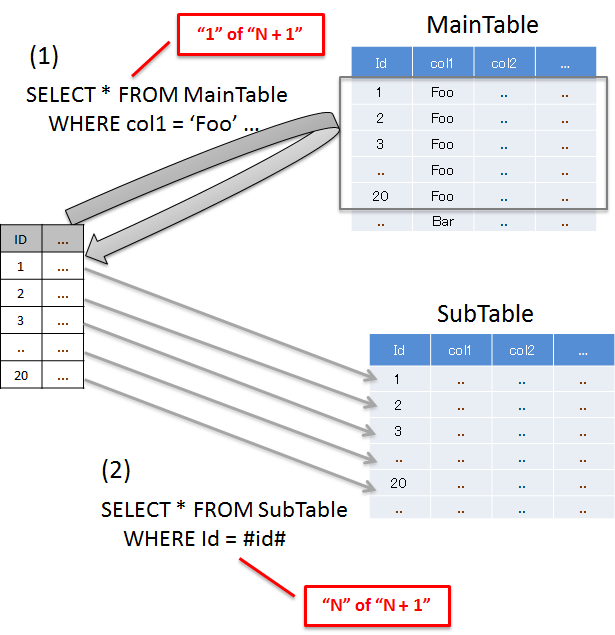
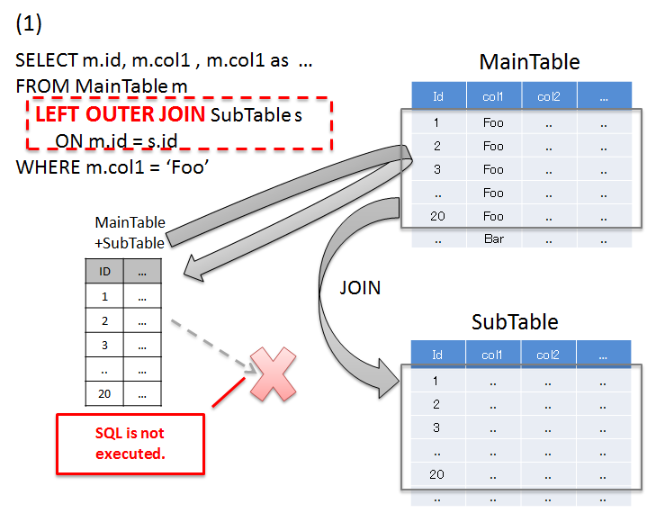
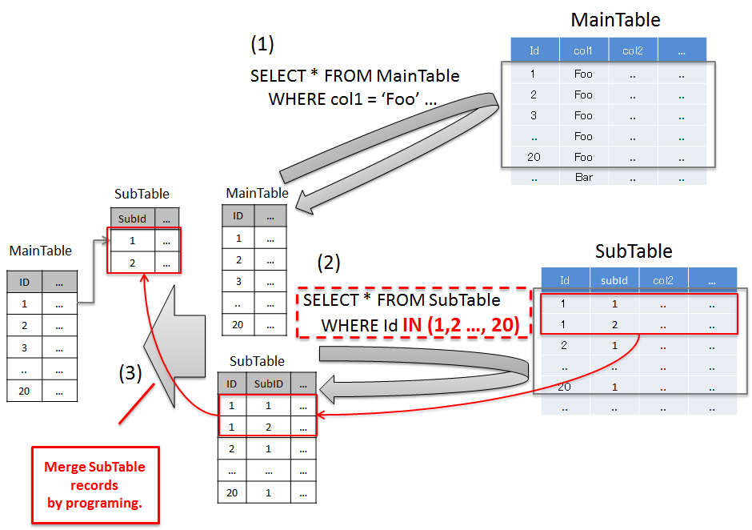

6.1. データベースアクセス（共通編）¶
6.1.1. Overview¶
本節では、RDBMSで管理されているデータにアクセスする方法について、説明する。
O/R Mapperに依存する部分については、
を参照されたい。
6.1.1.1. JDBC DataSourceについて¶
{kind=link}
6.1.1.1.1. アプリケーションサーバ提供のJDBCデータソース¶
アプリケーションサーバから提供されているデータソース¶ 項番
アプリケーションサーバ
参照ページ
Apache Tomcat 10.1
6.1.1.1.2. OSS/Third-Partyライブラリ提供のJDBCデータソース¶
OSS/Third-Partyライブラリから提供されているJDBCデータソース¶ 項番
ライブラリ名
説明
Apache Commons DBCP
Apache Commons DBCPを参照されたい。
6.1.1.1.3. Spring Framework提供のJDBCデータソース¶
6.1.1.2. トランザクションの管理方法について¶
6.1.1.3. トランザクション境界/属性の宣言について¶
@Transactionalアノテーションを指定することで実現する。6.1.1.4. データの排他制御について¶
6.1.1.5. 例外ハンドリングについて¶
java.sql.SQLException)や、O/R Mapper固有の例外を、Spring Frameworkから提供しているデータアクセス例外(org.springframework.dao.DataAccessExceptionのサブクラス)に変換する機能がある。DataAccessExceptionをcatchするのではなく、エラー内容を通知するサブクラスの例外をcatchすること。
ハンドリングする可能性があるDBアクセス例外のサブクラス¶ 項番
クラス名
説明
Note
O/R MapperにMyBatisを使用して楽観ロックを実現する場合は、ServiceやRepositoryの処理として楽観ロック処理を実装する必要がある。
本ガイドラインでは、楽観ロックに失敗したことを、Controllerに通知する方法として、
OptimisticLockingFailureExceptionおよびその子クラスの例外を発生させることを推奨する。理由は、アプリケーション層の実装(Controllerの実装)を、使用するO/R Mapperに依存させないためである。
Todo
JPA(Hibernate)を使用すると、現状意図しないエラーとなることが発覚している。
一意制約違反が発生した場合、
DuplicateKeyExceptionではなく、org.springframework.dao.DataIntegrityViolationExceptionが発生する。
下記は、一意制約違反を、ビジネス例外として扱う実装例である。
try { accountRepository.saveAndFlash(account); } catch(DuplicateKeyException e) { // (1) throw new BusinessException(ResultMessages.error().add("e.xx.xx.0002"), e); // (2) }
項番
説明
e“) をビジネス例外に指定すること。
6.1.1.6. 複数データソースについて¶
複数のデータソースが必要になる代表的なケース¶ 項番
ケース
例
特徴
データ(テーブル)の分類毎にデータベースやスキーマがわかれている場合。
顧客情報を保持するテーブル群と請求情報を保持するテーブル群が別々のデータベースやスキーマに格納されている場合など。
処理で扱うデータは決まっているので、静的に使用するデータソースを決定することができる。
利用者（ログインユーザ）によって使用するデータベースやスキーマが分かれている場合。
利用者の分類毎にデータベースやスキーマがわかれている場合など（マルチテナント等）。
利用者によって使用するデータソースが異なるため、動的に使用するデータソースを決定する必要がある。
6.1.1.7. 共通ライブラリから提供しているクラスについて¶
6.1.2. How to use¶
6.1.2.1. データソースの設定¶
6.1.2.1.1. アプリケーションサーバで定義したDataSourceを使用する場合の設定¶
xxx-context.xml(Tomcatの設定ファイル)<!-- (1) --> <Resource type="javax.sql.DataSource" name="jdbc/SampleDataSource" driverClassName="org.postgresql.Driver" url="jdbc:postgresql://localhost:5432/terasoluna" username="postgres" password="postgres" defaultAutoCommit="false" /> <!-- (2) -->
項番
属性名
説明
(1)-
データソースを定義する。
type
リソースの種類を指定する。
javax.sql.DataSourceを指定する。name
リソース名を指定する。ここで指定した名前がJNDI名となる。
driverClassName
JDBCドライバクラスを指定する。例では、PostgreSQLから提供されているJDBCドライバクラスを指定する。
url
接続URLを指定する。 【環境に合わせて変更が必要】
username
接続ユーザ名を指定する。【環境に合わせて変更が必要】
password
接続ユーザのパスワードを指定する。【環境に合わせて変更が必要】
defaultAutoCommit
自動コミットフラグのデフォルト値を指定する。falseを指定する。トランザクション管理下であれば強制的にfalseになる。
(2)-
Tomcat10.1の場合、factory属性を省略するとApache Commons DBCPが使用される。設定項目の詳細については、DBCP Configurationを参照されたい。
XxxEnvConfig.java@Bean(name = "dataSource") public DataSource dataSource() throws NamingException { JndiObjectFactoryBean bean = new JndiObjectFactoryBean(); bean.setJndiName("jdbc/SampleDataSource"); // (3) bean.setExpectedType(javax.sql.DataSource.class); bean.setResourceRef(true); bean.afterPropertiesSet(); return (DataSource) bean.getObject(); }
項番
属性名
説明
(3)-
データソースのJNDI名を指定する。Tomcatの場合は、データソース定義時のリソース名「(1)-name」に指定した値を指定する。
xxx-env.xml<jee:jndi-lookup id="dataSource" jndi-name="jdbc/SampleDataSource" /> <!-- (3) -->
項番
属性名
説明
(3)-
データソースのJNDI名を指定する。Tomcatの場合は、データソース定義時のリソース名「(1)-name」に指定した値を指定する。
6.1.2.1.2. Bean定義したDataSourceを使用する場合の設定¶
XxxEnvConfig.java@Bean(name = "dataSource", destroyMethod = "close") public DataSource dataSourceDefault() { BasicDataSource bean = new BasicDataSource(); // (1) bean.setDriverClassName("org.postgresql.Driver"); // (2) bean.setUrl("jdbc:postgresql://localhost:5432/terasoluna"); // (3) bean.setUsername("postgres"); // (4) bean.setPassword("postgres"); // (5) bean.setDefaultAutoCommit(false); // (6) // (7) (8) return bean; }
項番
説明
(1)データソースの実装クラスを指定する。例では、Apache Commons DBCPから提供されているデータソースクラス(
org.apache.commons.dbcp2.BasicDataSource)を指定する。(2)JDBCドライバクラスを指定する。例では、PostgreSQLから提供されているJDBCドライバクラスを指定する。
(3)接続URLを指定する。 【環境に合わせて変更が必要】
(4)接続ユーザ名を指定する。【環境に合わせて変更が必要】
(5)接続ユーザのパスワードを指定する。【環境に合わせて変更が必要】
(6)自動コミットフラグのデフォルト値を指定する。falseを指定する。トランザクション管理下であれば、強制的にfalseになる。
(7)BasicDataSourceには上記以外に、JDBC共通の設定値の指定、JDBCドライバー固有のプロパティ値の指定、コネクションプーリング機能の設定値の指定を行うことができる。設定項目の詳細については、DBCP Configurationを参照されたい。(8)設定例では値を直接指定しているが、環境によって設定値がかわる項目については、Placeholder(${…})を使用して、実際の設定値はプロパティファイルに指定すること。Placeholderについては、Spring Framework Documentation -Customizing Configuration Metadata with a BeanFactoryPostProcessor-のExample: The Class Name Substitution PropertySourcesPlaceholderConfigurerを参照されたい。
xxx-env.xml<bean id="dataSource" class="org.apache.commons.dbcp2.BasicDataSource" destroy-method="close"> <!-- (1) (8) --> <property name="driverClassName" value="org.postgresql.Driver" /> <!-- (2) --> <property name="url" value="jdbc:postgresql://localhost:5432/terasoluna" /> <!-- (3) --> <property name="username" value="postgres" /> <!-- (4) --> <property name="password" value="postgres" /> <!-- (5) --> <property name="defaultAutoCommit" value="false"/> <!-- (6) --> <!-- (7) --> </bean>
項番
説明
(1)データソースの実装クラスを指定する。例では、Apache Commons DBCPから提供されているデータソースクラス(
org.apache.commons.dbcp2.BasicDataSource)を指定する。(2)JDBCドライバクラスを指定する。例では、PostgreSQLから提供されているJDBCドライバクラスを指定する。
(3)接続URLを指定する。 【環境に合わせて変更が必要】
(4)接続ユーザ名を指定する。【環境に合わせて変更が必要】
(5)接続ユーザのパスワードを指定する。【環境に合わせて変更が必要】
(6)自動コミットフラグのデフォルト値を指定する。falseを指定する。トランザクション管理下であれば、強制的にfalseになる。
(7)BasicDataSourceには上記以外に、JDBC共通の設定値の指定、JDBCドライバー固有のプロパティ値の指定、コネクションプーリング機能の設定値の指定を行うことができる。設定項目の詳細については、DBCP Configurationを参照されたい。(8)設定例では値を直接指定しているが、環境によって設定値がかわる項目については、Placeholder(${…})を使用して、実際の設定値はプロパティファイルに指定すること。Placeholderについては、Spring Framework Documentation -Customizing Configuration Metadata with a BeanFactoryPostProcessor-のExample: The Class Name Substitution PropertySourcesPlaceholderConfigurerを参照されたい。
6.1.2.2. トランザクション管理を有効化するための設定¶
トランザクション管理を有効化するための基本的な設定は、ドメイン層の実装のトランザクション管理を使うための設定についてを参照されたい。
PlatformTransactionManagerについては、使用するO/R Mapperによって使うクラスがかわるので、詳細設定は、
を参照されたい。
6.1.2.3. JDBCのDebug用ログの設定¶
Note
log4jdbcはJDBC 4.2に対応しておらず実行時エラーとなる場合があるため、TERASOLUNA Server Framework for Java 5.6.0よりサポート対象外となった。 log4jdbcと同等のログを出力したい場合は、独自に実装することを検討されたい。
Todo
log4jdbcの代替となるログ出力の方法は、次版以降に記載する予定である。
6.1.3. How to extend¶
6.1.3.1. 動的にデータソースを切り替えるための設定¶
org.springframework.jdbc.datasource.lookup.AbstractRoutingDataSourceを継承したクラスを作成し、どのような条件でデータソースを切り替えるかを実装する必要がある。determineCurrentLookupKeyメソッドの戻り値となるキーとデータソースをマッピングさせることによって、これを実現する。キーの選択には通常、認証ユーザー情報、時間、ロケール等のコンテキスト情報を使用する。6.1.3.1.1. AbstractRoutingDataSourceの実装¶
AbstractRoutingDataSourceを拡張して作成したDataSourceを、通常のデータソースと同じように使用することでデータソースの動的な切り替えが実現できる。AbstractRoutingDataSourceを継承したクラスの実装例package com.examples.infra.datasource; import java.time.LocalTime import org.springframework.jdbc.datasource.lookup.AbstractRoutingDataSource; import org.terasoluna.gfw.common.time.ClockFactory; import jakarta.inject.Inject; public class RoutingDataSource extends AbstractRoutingDataSource { // (1) @Inject ClockFactory clockFactory; // (2) @Override protected Object determineCurrentLookupKey() { // (3) LocalTime localTime = LocalTime.now(clockFactory.fixed()); int hour = localTime.getHour(); return (7 <= hour && hour <= 23) ? "OPEN" : "CLOSE"; // (4) } }
項番
説明
(1)AbstractRoutingDataSourceを継承する。(2)時刻を取得するため、
ClockFactoryを使用する。詳細は、システム時刻を参照のこと。(3)determineCurrentLookupKeyメソッドを実装する。このメソッドの返り値と後述するbean定義ファイル内のtargetDataSourcesに定義したkeyをマッピングすることにより使用するデータソースが決定される。(4)メソッド内で、コンテキスト情報（ここでは時間）を参照し、後述するbean定義ファイル内の
targetDataSourcesとマッピングさせるキーの切り替えを行う。ここは業務用件に合わせて実装する必要がある。このサンプルは、時刻が「7:00から23:59まで」と「0:00から6:59まで」で違うキーを返すように実装されている。Note
認証ユーザー情報(IDや権限)によってデータソースを切り替えたい場合には、
determineCurrentLookupKeyメソッド内で、org.springframework.security.core.context.SecurityContextを使用して取得すれば良い。org.springframework.security.core.context.SecurityContextクラスの詳細は認証を参照のこと。
6.1.3.1.2. データソースの定義¶
作成したAbstractRoutingDataSource拡張クラスをbean定義ファイルに定義する。
XxxEnvConfig.java@Bean("routingDataSource") public RoutingDataSource routingDataSource( @Qualifier("dataSourceOpen") DataSource dataSourceOpen, @Qualifier("dataSourceClose") DataSource dataSourceClose, @Qualifier("dataSourceDefault") DataSource dataSourceDefault) { RoutingDataSource bean = new RoutingDataSource(); // (1) Map<Object, Object> target = new LinkedHashMap<Object, Object>(); target.put("OPEN", dataSourceOpen); // (2) target.put("CLOSE", dataSourceClose); // (2) bean.setTargetDataSources(target); bean.setDefaultTargetDataSource(dataSourceDefault); // (3) return bean; }
項番
説明
(1)先ほど作成した
AbstractRoutingDataSourceを継承したクラスを定義する。(2)使用するデータソースを定義する。
keyはdetermineCurrentLookupKeyメソッドで返却しうる値を定義する。value-refにはkeyごとに使用するデータソースを指定する。データソースの設定をもとに切り替えるデータソースの個数分、定義を行う必要がある。(3)determineCurrentLookupKeyメソッドで指定したkeyがtargetDataSourcesに存在しない場合は、このデータソースが使用される。実装例の場合、デフォルトが使用されることはないが、今回は説明のため、defaultTargetDataSourceを定義している。
xxx-env.xml<bean id="dataSource" class="com.examples.infra.datasource.RoutingDataSource"> <!-- (1) --> <property name="targetDataSources"> <!-- (2) --> <map> <entry key="OPEN" value-ref="dataSourceOpen" /> <entry key="CLOSE" value-ref="dataSourceClose" /> </map> </property> <property name="defaultTargetDataSource" ref="dataSourceDefault" /> <!-- (3) --> </bean>
項番
説明
(1)先ほど作成した
AbstractRoutingDataSourceを継承したクラスを定義する。(2)使用するデータソースを定義する。
keyはdetermineCurrentLookupKeyメソッドで返却しうる値を定義する。value-refにはkeyごとに使用するデータソースを指定する。データソースの設定をもとに切り替えるデータソースの個数分、定義を行う必要がある。(3)determineCurrentLookupKeyメソッドで指定したkeyがtargetDataSourcesに存在しない場合は、このデータソースが使用される。実装例の場合、デフォルトが使用されることはないが、今回は説明のため、defaultTargetDataSourceを定義している。
6.1.4. how to solve the problem¶
6.1.4.1. N+1問題の対策方法¶
N+1問題とは、データベースから取得するレコード数に比例して実行されるSQLの数が増えることにより、データベースへの負荷およびレスポンスタイムの劣化を引き起こす問題のことである。
以下に、具体的をあげる。

項番
説明
'Foo'のレコードを取得しており、20件のレコードが取得されている。
{kind=link}
6.1.4.1.1. JOIN(Join Fetch)を使用して解決する¶

項番
説明
'Foo'のレコードと、検索条件に一致したレコードのidが一致するSubTableのレコードを一括で取得している。カラム名が重複する場合は、別名を付与してどちらのテーブルのカラムなのか識別する必要がある。JOIN(Join Fetch)を使用すると、1回のSQLの発行で必要なデータを全て取得することができる。Warning
関連テーブルとの関連が、1:Nの場合は、JOIN(Join Fetch)による解決も可能だが、以下の点に注意すること。
1:Nの関連をもつレコードをJOINする場合、関連テーブルのレコード数に比例して、無駄なデータを取得することになる。 詳細については、一括取得時の注意事項を参照されたい。
JPA(Hibernate)使用する際に、1:NのNの部分が、複数ある場合は、Nの部分を格納するコレクション型は、
java.util.Listではなく、java.util.Setを使用する必要がある。
{kind=link}
6.1.4.1.2. 関連レコードを一括で取得する事で解決する¶

項番
説明
'Foo'のレコードを取得しており、20件のレコードが取得されている。Note
この方法は、SQLの発行を最小限におさえつつ、必要なデータのみ取得することができるという特徴をもつ。
関連テーブルのレコードをプログラミングによって振り分ける必要があるが、関連テーブルの数が多い場合や、1:NのNのレコード数が多い場合は、この方法で解決する方がよいケースがある。
{kind=link}
6.1.5. Appendix¶
6.1.5.1. LIKE検索時のエスケープについて¶
LIKE検索を行う場合は、検索条件として使用する値を、LIKE検索用にエスケープする必要がある。
共通ライブラリでは、LIKE検索用のエスケープ処理を行うためのコンポーネントとして、以下のクラスを提供している。
項番 |
クラス |
説明 |
|---|---|---|
org.terasoluna.gfw.common.query.
QueryEscapeUtils
|
SQL及びJPQLのエスケープ処理を行うメソッドを提供するユーティリティクラス。 本クラスでは、
を提供している。 |
|
org.terasoluna.gfw.common.query.
LikeConditionEscape
|
LIKE検索用のエスケープ処理を行うクラス。 |
Note
LikeConditionEscapeクラスは、「LIKE検索用のワイルドカード文字の扱いに関するバグ」を修正するために、terasoluna-gfw-common 1.0.2.RELEASEから追加したクラスである。
LikeConditionEscapeクラスは、データベース及びデータベースのバージョンの違いによるワイルドカード文字の違いを吸収する役割を持つ。
6.1.5.1.1. 共通ライブラリのエスケープ仕様について¶
共通ライブラリから提供しているエスケープ処理の仕様は、以下の通りである。
エスケープ文字は「 “
~“ 」。エスケープ対象文字は、デフォルトでは「 “
%“ , “_“」の2文字。
Note
エスケープ対象文字は、terasoluna-gfw-common 1.0.1.RELEASEまでは「 “%“ , “_“ , “％“ , “＿“」の4文字であったが、「LIKE検索用のワイルドカード文字の扱いに関するバグ」を修正するために、terasoluna-gfw-common 1.0.2.RELEASEより「 “%“ , “_“」の2文字に変更している。
なお、エスケープ対象文字として全角文字「”％“ , “＿“」を含めてエスケープする方法も提供している。
具体的なエスケープ例を以下に示す。
[デフォルト仕様のエスケープ例]
エスケープ対象文字としてデフォルト値を使用する場合のエスケープ例を以下に示す。
“
a““
a“無
エスケープ対象文字が含まれていないため、エスケープされない。
a~
a~~有
エスケープ文字が含まれているため、エスケープされる。
a%
a~%有
エスケープ対象文字が含まれているため、エスケープされる。
a_
a~_有
No.3と同様。
_a%
~_a~%有
エスケープ対象文字が含まれているため、エスケープされる。エスケープ対象文字が複数存在する場合はすべてエスケープされる。
a％
a％無
No.1と同様。
terasoluna-gfw-common 1.0.2.RELEASEより、デフォルト仕様では「”
％“」はエスケープ対象外の文字として扱う。
a＿
a＿無
No.1と同様。
terasoluna-gfw-common 1.0.2.RELEASEより、デフォルト仕様では「”
＿“」はエスケープ対象外の文字として扱う。
" "
" "無
No.1と同様。
""
""無
No.1と同様。
null
null無
No.1と同様。
[全角文字を含める場合のエスケープ例]
a％
a~％有
エスケープ対象文字が含まれているため、エスケープされる。
a＿
a~＿有
No.6と同様。
6.1.5.1.2. 共通ライブラリから提供しているエスケープ用のメソッドについて¶
共通ライブラリから提供しているQueryEscapeUtilsクラスとLikeConditionEscapeクラスのLIKE検索用のエスケープメソッドの一覧を、以下に示す。
項番
メソッド名
説明
toLikeCondition(String)
toStartingWithCondition(String)
%“ を付与する。前方一致検索用の値に変換する場合に使用するメソッドである。
toEndingWithCondition(String)
%“ を付与する。後方一致検索用の値に変換する場合に使用するメソッドである。
toContainingCondition(String)
%“ を付与する。部分一致検索用の値に変換する場合に使用するメソッドである。Note
No.2, 3, 4 については、SQLやJPQL側で一致方法(前方一致、後方一致、部分一致)を指定するのではなく、プログラム側で指定する時に使用するメソッドである。
6.1.5.1.3. 共通ライブラリの使用方法¶
LIKE検索時のエスケープ処理の実装例については、使用するO/R Mapper向けのドキュメントを参照されたい。
MyBatis3を使用する場合は、データベースアクセス（MyBatis3編）のLIKE検索時のエスケープを参照されたい。
JPA(Spring Data JPA)を使用する場合は、データベースアクセス（JPA編）のLIKE検索時のエスケープについてを参照されたい。
Note
エスケープ処理を行うために使用するAPIは、使用するデータベースがサポートしているワイルドカード文字によって使い分ける必要がある。
[ワイルドカードとして「 “%” , “_”」(半角文字)のみをサポートしているデータベースの場合]
String escapedWord = QueryEscapeUtils.toLikeCondition(word);
QueryEscapeUtilsクラスのメソッドを直接使用して、エスケープ処理を行う。
[ワイルドカードとして「”％” , “＿”」(全角文字)もサポートしているデータベースの場合]
String escapedWord = QueryEscapeUtils.withFullWidth() // (2) .toLikeCondition(word); // (3)
QueryEscapeUtilsメソッドのwithFullWidth()メソッドを呼び出して、LikeConditionEscapeクラスのインスタンスを取得する。(2)で取得した
LikeConditionEscapeクラスのインスタンスのメソッドを使用して、エスケープ処理を行う。
6.1.5.2. Sequencerについて¶
Note
共通ライブラリとしてSequencerを用意した理由
Sequencerを用意した理由は、JPAの機能として提供されているID採番機能において、シーケンス値を文字列としてフォーマットする仕組みがないためである。実際のアプリケーション開発では、フォーマットされた文字列をプライマリキーに設定するケースもあるため、共通ライブラリとしてSequencerを提供している。
プライマリキーに設定する値が数値の場合は、JPAの機能として提供されているID採番機能を使用することを推奨する。JPAのID採番機能については、データベースアクセス（JPA編）のEntityの追加を参照されたい。
Sequencerを用意した主な目的は、JPAでサポートされていない機能の補完であるが、JPAと関係ない処理で、シーケンス値が必要な場合に、使用することもできる。
6.1.5.2.1. 共通ライブラリから提供しているクラスについて¶
項番
クラス名
説明
SequencerインタフェースのJDBC用の実装クラス。データベースにSQLを発行してシーケンス値を取得するためのクラスである。データベースのシーケンスオブジェクトから値を取得することを想定したクラスではあるが、データベースに登録されているファンクションを呼び出すことで、シーケンスオブジェクト以外から値を取得することもできる。
6.1.5.2.2. 共通ライブラリの利用方法¶
Sequencerをbean定義する。
XxxInfraConfig.java@Bean(name = "articleIdSequencer") public JdbcSequencer<String> jdbcSequencer(DataSource dataSource) { JdbcSequencer<String> bean = new JdbcSequencer<>(); // (1) bean.setDataSource(dataSource); // (2) bean.setSequenceClass(String.class); // (3) bean.setNextValueQuery( "SELECT 'A' || LPAD(NEXTVAL('seq_article'),9,'0')"); // (4) bean.setCurrentValueQuery( "SELECT 'A' || LPAD(CURRVAL('seq_article'),9,'0')"); // (5) return bean; }
項番
説明
(1)org.terasoluna.gfw.common.sequencer.Sequencerインタフェースを実装したクラスを、bean定義する。上記例では、SQLを発行してシーケンス値を取得するためのクラス(JdbcSequencer)を指定している。(2)シーケンス値を取得するSQLを、実行するデータソースを指定する。(3)取得するシーケンス値の型を指定する。上記例では、SQLで文字列へ変換しているので、java.lang.String型を指定している。(4)次のシーケンス値を取得するためのSQLを指定する。上記例では、データベース(PostgreSQL)のシーケンスオブジェクトから取得したシーケンス値を、左”0“埋めの文字列としてフォーマットしている。データベースから取得したシーケンス値が、”1“の場合、A000000001がSequencer#getNext()メソッドの返り値として返却される。(5)現在のシーケンス値を取得するためのSQLを指定する。データベースから取得したシーケンス値が、”2“の場合、A000000002がSequencer#getCurrent()メソッドの返り値として返却される。
xxx-infra.xml<!-- (1) --> <bean id="articleIdSequencer" class="org.terasoluna.gfw.common.sequencer.JdbcSequencer"> <!-- (2) --> <property name="dataSource" ref="dataSource" /> <!-- (3) --> <property name="sequenceClass" value="java.lang.String" /> <!-- (4) --> <property name="nextValueQuery" value="SELECT 'A' || LPAD(NEXTVAL('seq_article'),9,'0')" /> <!-- (5) --> <property name="currentValueQuery" value="SELECT 'A' || LPAD(CURRVAL('seq_article'),9,'0')" /> </bean>
項番
説明
(1)org.terasoluna.gfw.common.sequencer.Sequencerインタフェースを実装したクラスを、bean定義する。上記例では、SQLを発行してシーケンス値を取得するためのクラス(JdbcSequencer)を指定している。(2)シーケンス値を取得するSQLを、実行するデータソースを指定する。(3)取得するシーケンス値の型を指定する。上記例では、SQLで文字列へ変換しているので、java.lang.String型を指定している。(4)次のシーケンス値を取得するためのSQLを指定する。上記例では、データベース(PostgreSQL)のシーケンスオブジェクトから取得したシーケンス値を、左”0“埋めの文字列としてフォーマットしている。データベースから取得したシーケンス値が、”1“の場合、A000000001がSequencer#getNext()メソッドの返り値として返却される。(5)現在のシーケンス値を取得するためのSQLを指定する。データベースから取得したシーケンス値が、”2“の場合、A000000002がSequencer#getCurrent()メソッドの返り値として返却される。
bean定義したSequencerからシーケンス値を取得する。
Service
// omitted // (1) @Inject @Named("articleIdSequencer") // (2) Sequencer<String> articleIdSequencer; // omitted @Transactional public Article createArticle(Article inputArticle) { String articleId = articleIdSequencer.getNext(); // (3) inputArticle.setArticleId(articleId); Article savedArticle = articleRepository.save(inputArticle); return savedArticle; }
項番
説明
(1)bean定義したSequencerオブジェクトをInjectする。上記例では、シーケンス値は、フォーマットされた文字列として取得するため、Sequencerのジェネリクス型には、java.lang.String型を指定している。(2)Injectするbeanのbean名を@jakarta.inject.Namedアノテーションのvalue属性に指定する。上記例では、xxx-infra.xmlに定義したbean名(articleIdSequencer)を指定している。(3)Sequencer#getNext()メソッドを呼び出し、次のシーケンス値を取得する。上記例では、取得したシーケンス値を、EntityのIDとして使用している。現在のシーケンス値を取得する場合は、Sequencer#getCurrent()メソッドを呼び出す。Tip
bean定義する
Sequencerが一つの場合は、@Namedアノテーションが省略できる。複数指定する場合は、@Namedアノテーションを使用して、bean名の指定が必要となる。
6.1.5.3. Spring Frameworkから提供されているデータアクセス例外へ変換するクラス¶
Spring Frameworkのデータアクセス例外へ変換する役割を持つクラスを、以下に示す。
Spring Frameworkのデータアクセス例外への変換クラス¶ 項番
クラス名
説明
MyBatisや、
JdbcTemplateを使った場合、本クラスによって、JDBC例外が、Spring Frameworkのデータアクセス例外に変換される。変換ルールは、XMLファイルに記載されており、デフォルトで使用されるXMLファイルは、spring-jdbc.jar内のorg/springframework/jdbc/support/sql-error-codes.xmlとなる。 クラスパス直下に、XMLファイル（sql-error-codes.xml）を配置することで、デフォルトの動作を変更することもできる。
JPA(Hibernateの実装)を使った場合、本クラスによって、O/R Mapper例外(Hibernateの例外)がSpring Frameworkのデータアクセス例外に変換される。
HibernateJpaDialectで変換できない例外が発生した場合は、本クラスによって、JPA例外がSpring Frameworkのデータアクセス例外に変換される。
JPA(Hibernateの実装)を使った場合、本クラスによって、JDBC例外とO/R Mapper例外に変換される。
6.1.5.4. Spring Frameworkから提供されているJDBCデータソースクラス¶
Spring Frameworkから提供されているJDBCデータソース¶ 項番
クラス名
説明
アプリケーションからコネクションの取得依頼があったタイミングで、
java.sql.DriverManager#getConnectionを呼び出し、新しいコネクションを生成するデータソースクラス。 コネクションのプーリングが必要な場合は、アプリケーションサーバのデータソース、または、OSS/Third-Partyライブラリから提供されているデータソースを使用すること。
DriverManagerDataSourceの子クラスで、一つのコネクションを使いまわす実装になっており、シングルスレッドで動くユニットテスト向けのデータソースクラスである。 ユニットテストでも、マルチスレッドでデータソースにアクセスする場合は、本クラスを使用すると、期待した動作にならないことがあるので、注意が必要である。
アプリケーションからコネクションの取得依頼があったタイミングで、
java.sql.Driver#getConnectionを呼び出し、新しいコネクションを生成するデータソースクラス。 コネクションのプーリングが必要な場合は、アプリケーションサーバのデータソース、または、OSS/Third-Partyライブラリから提供されているデータソースを使用すること。
Spring Frameworkから提供されているJDBCデータソースのアダプター¶ 項番
クラス名
説明
トランザクション管理されていないデータソースを、Spring Frameworkのトランザクション管理対象にするためのアダプタークラス。
実行中のトランザクションの独立性レベルによって、使用するデータソースを切り替えるためのアダプタークラス。